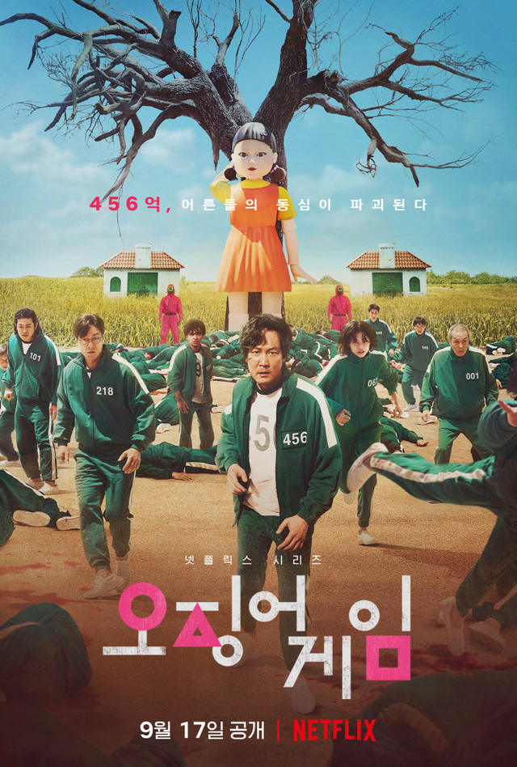
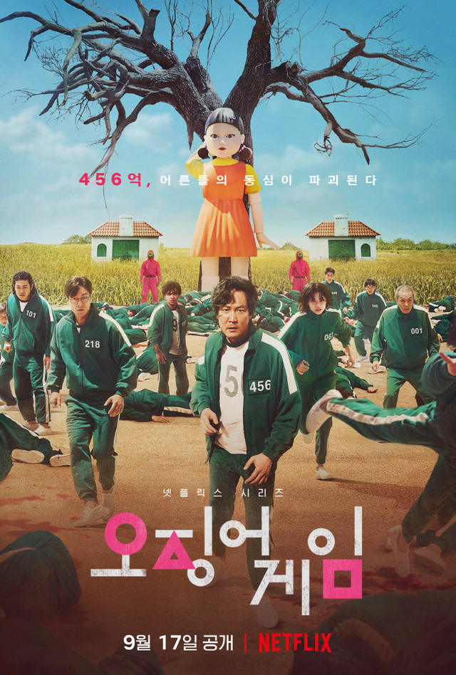
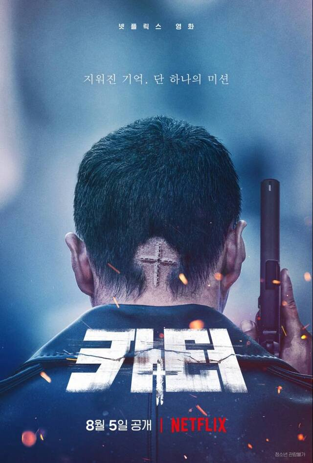
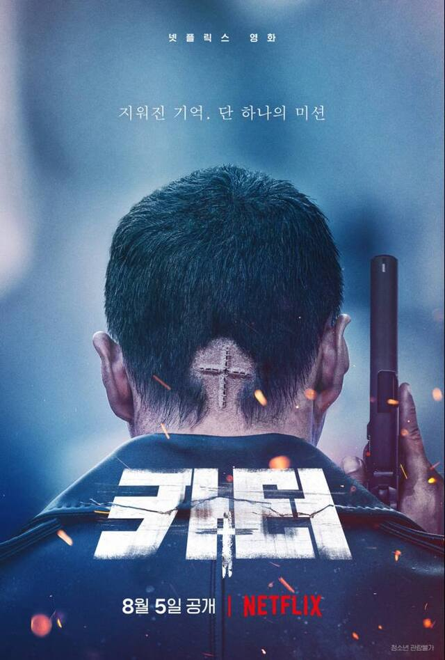
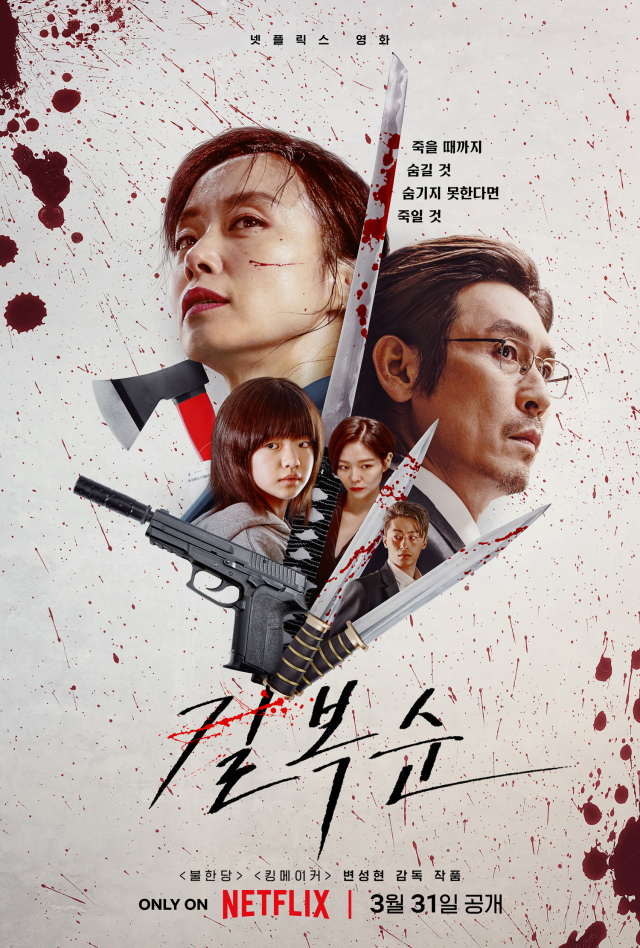
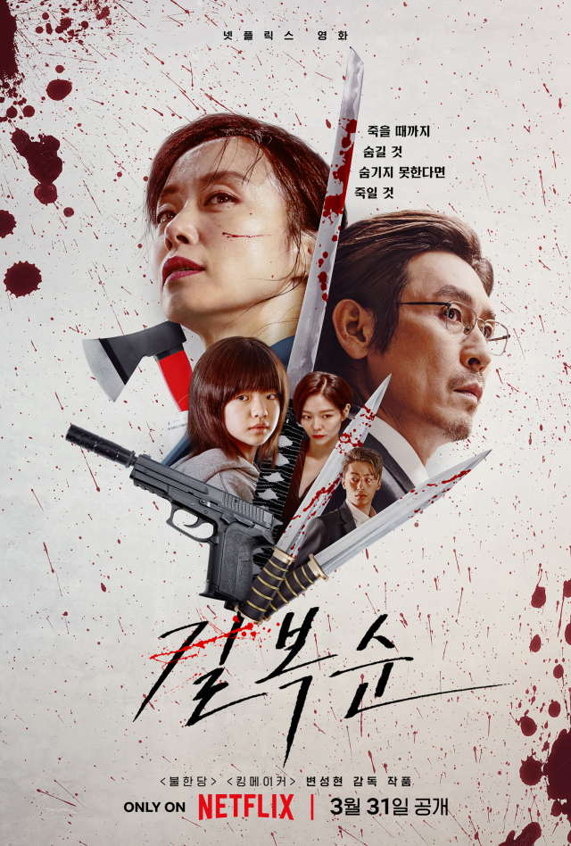
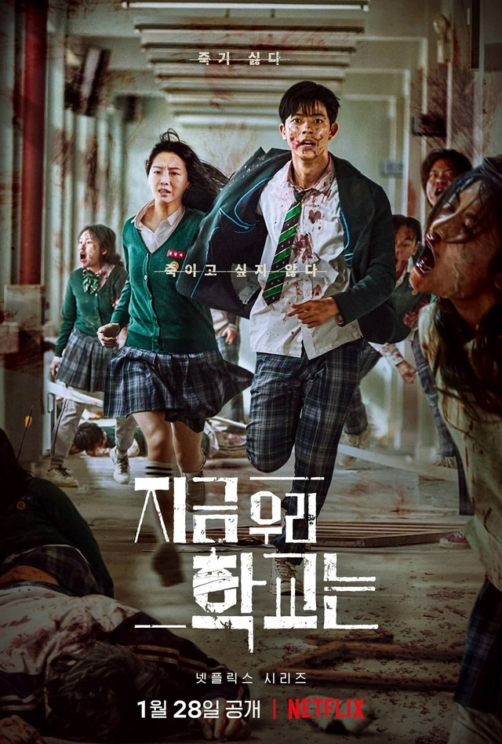
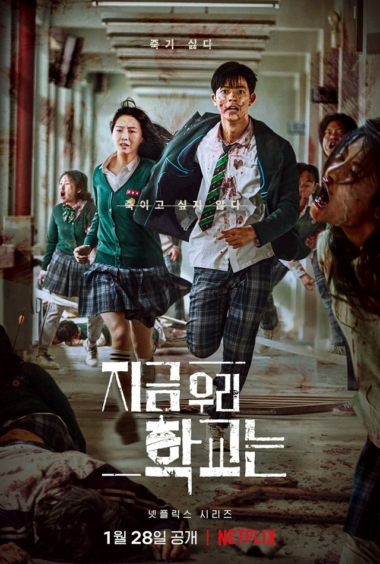
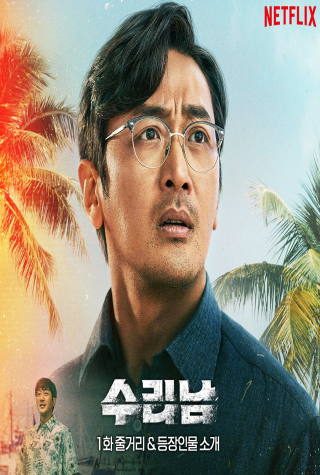
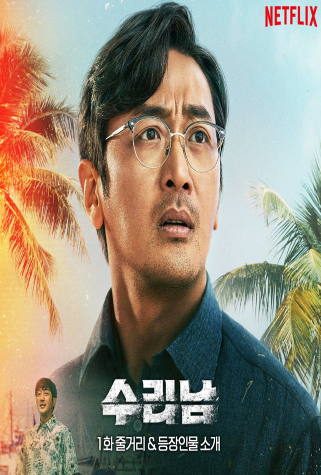

오징어 게임
황동혁 감독이 제작한 넷플릭스 오리지널 한국 드라마. 2021년 9월 17일에 공개되었다.
456명의 사람들이 456억의 상금이 걸린 미스터리한 데스 게임에 초대되면서 벌어지는 이야기를 그린 서바이벌 데스 게임을 소재로 한 드라마이며 제목은 골목 놀이인 오징어에서 따 왔다.
2022년 6월 13일 시즌 2 제작이 결정됐다.
영화 기생충과 더불어 세계에서 엄청난 수익을 올리며 유명해진 한국 드라마다. 기생충이 사회에서 상류층과 하류층 사이의 허물 수 없는 벽을 표현했다면, 오징어 게임은 상대적으로 가난한 사람들이 돈과 출세를 위해 물불을 안 가리고 서로 경쟁하는 적자생존의 현장을 적나라하게 표현한 드라마다.
 

카터
밀“당신의 이름은 카터입니다. 절 믿어주세요. 그래야 모두가 살 수 있어요”
DMZ에서 발생한 바이러스로 미국과 북한이 초토화된 지 2달. 모든 기억을 잃은 채 눈을 뜬 ‘카터’(주원). 머릿속에는 정체 모를 장치, 입 안에는 살상용 폭탄, 귓속에는 낯선 목소리가 들려온다. 바이러스의 유일한 치료제인 소녀를 데려오지 않으면 폭탄이 언제 터질지 모른다. 그리고 턱 끝까지 추격해오는 CIA와 북한군.
살기 위해 임무를 성공시키고, 소녀를 찾아 북으로 향해야만 하는 ‘카터’의 리얼 타임 액션이 시작된다!
 

길복순
회사에선 이름난 암살자. 집에선 십 대 딸을 둔 싱글맘. 죽이는 일? 그거야 쉽다. 진짜 어려운 건 애 키우는 일이지.
“사람 죽이는 건 심플해. 애 키우는 거에 비하면”
‘청부살인’이 본업이지만 겉으로 보기에는
평범한 이벤트 회사인 MK ENT. 소속 킬러 ‘길복순’(전도연)은
‘작품’은 반드시 완수해 내는 성공률 100%의 킬러이자, 10대 딸을 둔 엄마다.
업계에서는 아무도 범접할 수 없는 에이스지만, 딸 ‘재영’(김시아)과의 관계는 서툴기만 한 싱글맘인 그는 자신과 딸 사이의 벽을 허물기 위해 퇴사까지 결심한다.
MK ENT. 대표 ‘차민규’(설경구)의 재계약 제안의 답을 미룬 채, 마지막 작품에 들어간 ‘복순’은
임무에 숨겨진 진실을 알게 된 후, 회사가 허가한 일은 반드시 시도해야 한다는 규칙을 어기게 된다. 그 소식을 들은 MK ENT.는 물론, 모든 킬러들의 타겟이 되고야 마는데…
죽거나 죽이거나, 피할 수 없는 대결이 시작된다!

 

지금 우리 학교는
2022년 1월 28일에 공개된 넷플릭스 오리지널 한국 드라마. 웹툰 '지금 우리 학교는'을 원작으로 한다.
국내판과 해외판 제목이 다르다. 국내판은 원작 웹툰의 제목을 그대로 따라가고, 해외판은 라인 웹툰에서 연재되는 영어판의 제목인 'All of Us Are Dead'를 사용한다. 직역하면 '우리 모두가 죽었다. 좀비물이라는 장르를 감안하여 의역하면 '우리 모두가 시체다' 정도가 된다. 다만 일본판은 국내판을 직역한 지금, 우리들의 학교는…‘(今、私たちの学校は…)’라는 제목으로 개봉한다. 시즌 2 제작이 확정 되었다.

 

수리남
수리남에서 칼리 카르텔과 손잡고 마약 밀매조직을 만들어 마약왕이 된 한국인 조봉행의 실화를 바탕으로 한다. 조봉행 관련 기사
드라마의 시간적 배경은 2008년부터 2009년 사이이다. 회상 장면까지 따지면 강인구가 태어난 해이자 베트남 전쟁이 개시된 1968년까지 거슬러 올라간다. 극중 1990년대로 추정되는 시기에 배경음악으로 윤수일의 노래 '아파트'가 흘러나온다. 제6화 마지막 장면의 카센터 벽에 보면 2009년 4월 8일에 치러진 '4.8 경기도 교육감 선거'의 포스터가 있고 김상곤 전 교육부총리의 모습이 눈에 띈다. 이와 함께 강인구와 최창호(가명: 구상만)의 복장은 초봄의 옷이다. 이후 종반부 활주로로 들어오는 비행기를 감시하는 DEA의 카메라에 2009년 4월 20일 14시이라고 적혀 있음으로, 시간적 배경은 2009년 4월 중이라는 걸 추정할 수 있다.
공간적 배경은 대한민국의 경기도 동두천시와 수리남의 파라마리보, 신트마르턴, 푸에르토리코 등지이다. 제주도도 자주 등장한다.